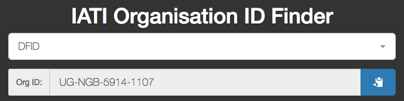
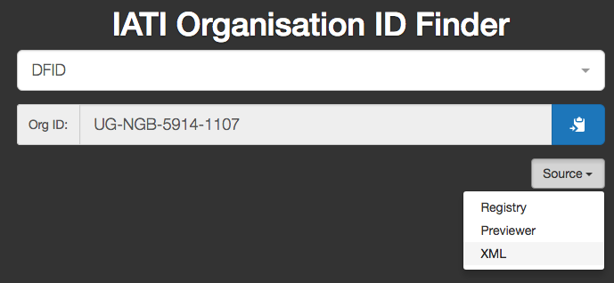

Yes, agree.
(my emphasis) - but that’s the crucial bit for me.
Yes, agree.
(my emphasis) - but that’s the crucial bit for me.
Bumping this:
What do you think, @IATI-techteam?
I use https://andylolz.github.io/org-id-finder/ quite often. It would be great if the registry could provide this service directly.
+1
I see this as core infrastructure, and based on the needs of publishers.
Hi Andy and all,
I am bit late into the discussion here. As Reid mentioned in earlier thread, we are doing something similar in and for AidStream users - where we are taking data from org xml and the publishers list in the registry. We are only consuming data that pass org-id.guide criteria or is present in iati-org-codelist - rest are ignored even if they are included in org-xmls. We want this to be controlled list instead of solely consuming org-xml files only. There are number of issues with org-xml files which might give wrong info to the users. I randomly typed DFID and got this
 Apparently this xml has that id https://aidstream.org/files/xml/stromme_ug-org.xml
We are putting extra eyes to avoid situation like this but still there are chances of missing those as well, when the numbers of org increase. So we call for suggestions from the users as well to improve the data. Like providing alternative names for organisations so that searching for DFID also gives results here http://api.stage.aidstream.org/organisation But it’s far from perfection but hope that this will at least help the majority of aidstream users to improve the a limited number of organisations to start with.
We are releasing this as a part of aidstream new feature solely targeting the participating-organisations data.
I would be very happy to collaborate and see how we can combine our forces on org-data.
Best
Anjesh.
Nice! Thanks for sharing, @anjesh! I’m exciting about something like this being baked into AidStream.
Just to respond on this point:
So, I did it this way by design, mostly because I don’t have the time or desire to take ownership of someone else’s data issues  Funnily enough, I did exactly the same search as you last week, and found the same data issue. But instead of taking responsibility for the problem and fixing it myself, I was able to trace where the problem was, by clicking the source link:
Funnily enough, I did exactly the same search as you last week, and found the same data issue. But instead of taking responsibility for the problem and fixing it myself, I was able to trace where the problem was, by clicking the source link:

I reported the issue (via zendesk) last week, and it’s currently with the publisher in question to fix.
Admittedly, that doesn’t help users in the meantime – the data is bad, and remains bad until the publisher fixes it. But once it’s fixed, it’s fixed for everyone. I’d encourage you to also bubble up the data issues you find back to the publishers.
At the “Mini developers TAG” meeting today, I heard several people (I think) reiterate the need for a canonical list of verified organisation references (my words). I pointed to this thread on twitter, but want to flag again.
I also wanted reiterate that the method we went through confirmed (as @anjesh describes) that the Organisation XML files seem to be our best initial source of these references. This isn’t an ID for every single organisation mentioned in IATI data, but it is a start.
And - I’m going to do that thing of tagging people I heard say (or at least listen to!) this: @rolfkleef @pelleaardema @Herman @siemvaessen @hayfield @bill_anderson @Imogen_Kutz @r_clements @JohnAdams
A canonical list of activity ids would also be very helpfull to implement validation of references to other activities. The lack of both the canonical org id and activity lists as a part of the IATI infrastructure causes quite some headaches and duplication of effort to do very basic data validation checks.
So, who will be managing this list to the extent that anyone can trust this list for it to be codified into a codelist?
Any working solution should not have manual intervention, since new organizations en activities are frequently added. What would be helpful is that the existing organization and activity codes are automatically extracted from the current IATI XML publications. Then these list can be used to validate if references to organisations-id and activity-ids actually exist.
Trust is implicit since an IATI publisher is responsible for its own data. So if you as a publisher publish an activity with a certain identifier, that is by definition the truth since you own the data that activity.
For clarity: In what sense does this thing fail to do what you’re looking for, @stevieflow / @siemvaessen / @Herman?
^^ I agree with this! That’s why it’s exactly how this thing works (for org IDs, at least.) For activity IDs, I guess you need to look to a datastore like this one (though I’m afraid I have no way to judge its trustworthiness!)
I guess you’re talking about the secretariat either funding, managing, running or endorsing this somehow. Is that right?
I guess you’re talking about the secretariat either funding, managing, running or endorsing this somehow. Is that right?
[/quote]
@andylolz yes.
Please can we take out of this conversation mention of:
This isn’t what is being talk about. One thing at a time, folks!
The remit of the original focus was to get a list of organisation references for IATI publishers. Whilst that sounds straightforward, we realised it isn’t always so. We then found that the data published via the Organisation standard was the optimal source.
I agree. This is why the methodology above took a look at the org data already provided by publishers. Any solution could continue to focus on this data as a source.
The interface to this is very useful. It’s be great to have a similar interface to many other “codes”! However, I think some organisations would also appreciate the data as a list, or in a format that could be imported into their applications. So this application doesn’t fail anything – it’s just a step on from there being a list!!
It’s probably important to consider this isn’t a list in the same way as other lists we use. It’s not a list of countries, that changes via formal announcements, for example.
This list of IATI publisher references that will a) increase regularly / at no set pattern b) be contributed to by each publisher, via their org file (so no central sanction of the list) c) have the possibility of changing, should a publish change their org reference (which is theoretically possibly – a UN agency may decide to add the XM-DAC prefix, for example.)
Therefore, the important step seems to be:
I’d imagine the service to provide ongoing access the contents of this list would be something consider core to the IATI infrastructure.
I think this can be a community effort, with backing from the Secretariat. We also have an in built metric, in that we can actively track those organisations that do not provide an org file / matching references in their org file. This metric might be something the secretariat could take on.
The API is linked in the footer. You can use that to get a snapshot list of IATI org IDs, in CSV, JSON or atom.
I’ll change the footer links to make this more obvious.
Great API! Will this be ‘officially’ maintained?
Hi All
A bit late to this conversation but I just wanted to say that I find @andylolz API super helpful - thanks Andy! I work for a funder and currently in the process of publishing about 200 activities (i.e. grants) - I started looking for organisations’ ids by scrolling up and down the IATI Registry, then discovered this tool (thanks to @stevieflow) and almost halved the time it took me to look up orgs on the Register.
I have also published our org file so the stat is now 407 out of 555 publishers!
Agree this should be maintained centrally as a tool IATI should offer to encourage and support people to publish and agree a list would also be helpful for things like vlookups etc. Tools like this can improve the quality of the data massively!
And I know this is slightly separate to this thread but an activity finder, based on the same concept and maintained centrally, would be amazing - it would be also useful to ensure that aid flows are tracked properly (by enabling publishers to check that they’re using the right activity id)
When using API’s in production applications, its continuity must be guaranteed. @bill_anderson would it therefore be possible to have this API of @andylolz defined as an IATI core service (to be hosted either by the IATI technical team or to be hosted by a third party under the supervision of the IATI technical team)?
The source code is available here:
It’s MIT licensed, so if someone wants to take it, rebrand it, repurpose it… I’m fine with that.
An update on the figures from the original post, two years on.
- Of 555 IATI publishers, there were 406 IATI organisation files (73% of publishers provide an Org file)
We’re now up to 1,024 IATI publishers. 694 of those have an IATI organisation file. That’s 68% - so the numbers have gone up, but the percentage has slipped a little.
- Of these 406 publishers, 392 organisation identifiers match the reporting-org/@ref (97%)
Of the 694 publishers with organisation files, 678 of the organisation-identifiers in those org files match the reporting-org/@ref (98%).
- Of 392 “matching” organisation identifiers, 333 started with a “recognised” prefix (85%)
Of the 678 “matching” organisation identifiers, 637 start with a “recognised” prefix (94%). I guess that means new publishers are choosing (or being given) valid org IDs, and some existing publishers have updated their org IDs to the new system. That’s excellent.
It looks like there are also noteable improvements to the registry metadata. I suspect the @IATI-techteam have pushed to improve this, so that is great. (Recent changes to the registry ensuring the org ID can only be modified on request will certainly also help with this.)
First of all, 100% of organisation identifiers in these 678 org files match the organisation identifiers in the registry metadata. @stevieflow and @bjwebb didn’t include this figure last time so we don’t have it for comparison, but I suspect it wasn’t this high.
958 of the 1,024 org identifiers in the registry metadata match the reporting-org/@ref (94%).
Of these 958 “matching” organisation identifiers, 898 start with a recognised prefix (94%).
Many thanks for this timely update @andylolz
It does represent excellent news in terms of the growth of the number and quality of the organisation references available. Thanks to the @IATI-techteam for pushing this forward for us all.
I’m unsure what the “recent changes to the registry” are, but these also seem welcome. Is there an announcement of these changes anywhere @WendyThomas ?
@andylolz can you confirm that the service you voluntarily host remains up to date / in synch ( I think it’s automagically so)?
From all this, there looks to be four questions to us all to address:
Given that registry itself now contains a high match (94%) of org references to the reporting-org/@ref data , is this to be a preferred methodology?
If so, where does that leave the purpose of the organisation file? Our original point was to highlight that the org file could be the perfect place to maintain a single source of truth in terms of a publisher org reference (and less dependent on the registry itself, which might be a use case for data users who download the whole corpus)
What do we do about the fact that 32% of publishers (330) do not publish an organisation file?
Whilst org references are available in a list on the registry, do we need to ensure services such as @andylolz org id finder are core, central and easily available to all?
Sorry, I should have provided a link. I was referring to changes to the registry that prevent publishers from changing their IATI publisher and Org IDs.
Indeed yes. The footer currently says it last updated 9 hours ago.
I’m tempted to change the methodology that org-id-finder uses, to instead use registry metadata. This would make it much simpler. But it would be good to get confirmation that this is now the most reliable source.